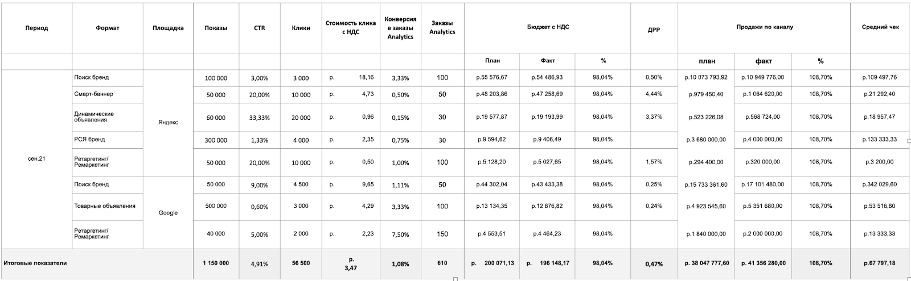

Как проанализировать эффективность контекстной рекламы
В предыдущем уроке вы познакомились с разными форматами контекстной рекламы. В этом уроке вы освоите основные показатели, с помощью которых нужно измерять эффективность контекстной рекламы.
Как измерить эффективность контекстной рекламы
Основных метрик контекстной рекламы множество, но мы используем шесть основных.
1. Показы. То, сколько раз пользователь увидел рекламу. Метрика показывает объем спроса, корректность выбора целевой аудитории и релевантность объявления. По показам анализируем и то, насколько правильно мы используем ключевые слова. Если показов мало, ключевые слова, возможно, подобрали неправильно.
2. Клики. Соотношение числа кликов на рекламу к числу ее показов – CTR. Как и показы, CTR помогает понять, насколько корректно мы подобрали ключевые слова и насколько привлекательно и релевантно объявление. Чем выше CTR, тем в перспективе дешевле нам обходится каждый клик. Поисковики любят объявления, которые показывают хороший CTR, поэтому чаще показывают именно их.
Нормы CTR отличаются в зависимости от отрасли, но усредненные цифры таковы:
- брендовые запросы – 20–40 процентов кликов;
- общие запросы – 10–15 процентов кликов;
- реклама в сетях «Яндекса» и Google – 5–20 процентов кликов;
- смарт-баннеры – 3–4 процента кликов.
3. Конверсия. То, сколько людей из тех, кто перешел по объявлению, сделали заказ. Суперважная метрика: она показывает как качество привлеченного трафика, так и качество сайта. Если конверсия низкая, мы либо привлекаем тех, кто пока не готов купить, либо наш сайт непонятен и неудобен пользователю. То есть по конверсии можно оценить работу как интернет-маркетолога, так и менеджера сайта.
Нормы конверсии также разнятся в зависимости от индустрии и могут составлять от 1 до 5–6 процентов. Более подробные данные по конверсии в вашей сфере можно найти на платформе Data Insight: там много хороших исследований по российскому e-commerce.
4. Стоимость заказа. То, во сколько нам обошелся каждый заказ. На каждом этапе воронки часть пользователей отваливается. Соответственно, стоимость клика не равна стоимости заказа. Например, если один клик стоил 10 руб., на объявление кликнули 100 раз, а купили всего 1 раз, то этот заказ обошелся нам в 1 тыс. руб. Стоимость заказа важно понимать, чтобы сходилась экономика.
5. LTV. То, сколько прибыли мы получаем с одного клиента за все время взаимодействия с ним. Некоторым компаниям важно, чтобы уже первый заказ был экономически эффективен. Но мы, как и многие компании в высококонкурентной среде, смотрим на то, чтобы прибыль приносило взаимодействие с клиентом в целом. На первом заказе мы можем сработать в убыток, зато заработаем на следующих, если удержим клиента.
Таким образом, если вы ориентируетесь на удержание, считать стоимость привлечения первого заказа лучше в совокупности со всеми остальными. Если на первом заказе вы потерпели убытки, но потом продали этому же клиенту еще 9 раз, проанализируйте стоимость с учетом 10 продаж. Тогда стоимость первого заказа выглядит уже не так страшно, и экономика сходится.
6. Доля рекламных расходов (ДРР). Соотношение затрат на рекламу к общему обороту. Для нас это основная метрика эффективности рекламы. Мы анализируем ДРР как для всего маркетинга в целом, так и для каждого канала в отдельности. И на основе этой метрики оцениваем и качество работы интернет-маркетолога, и качество сайта.
На верхнем уровне достаточно этих шести метрик. При этом надо понимать, что успех контекстной рекламы зависит от эффективности других каналов продвижения. Контекст работает на горячем спросе. Чтобы этот спрос создать, необходимо вкладываться в охватные имиджевые кампании: в частности, таргетинг и SEO.
Как в Salomon анализируют эффективность контекстной рекламы
На картинке ниже можете видеть пример отчета, который мы еженедельно изучаем вместе с маркетинговым агентством. Цифры здесь вымышлены, но формат объявлений, за которыми мы следим, реален. Это, в частности, брендовые запросы, смарт-баннеры, динамические объявления, ремаркетинг и ретаргетинг.

Помимо показов, кликов и конверсии по каждому формату мы смотрим план и факт расходов. Причем если факт меньше плана, это не всегда хорошо. Например, мы заложили 1 млн руб., а потратили только 800 тыс. Если план продаж выполнен, то это в целом нормальный результат, но мы могли заработать и больше, если бы потратили еще 200 тыс. Остаток означает, что где-то мы уперлись в ограничение спроса и не смогли его пробить.
Если реклама в поиске окажется для вас слишком дорогой, попробуйте начать с рекламных сетей «Яндекса» и Google – баннеров на сайтах-партнерах. Там больше рекламных площадей, а значит, меньше конкуренция. А узнаваемость бренда формируйте через соцсети и SEO.
Опыт Оксаны Колесниковой, директора по маркетингу интернет-магазина «Деликатеска.ру».
Результаты контекстных кампаний я оцениваю еженедельно вместе со специалистом-директологом. Мы смотрим отчет, где видим стоимость, клики и заказы по каждому объявлению, и оцениваем, что сработало, а что нет.
Мы отслеживаем результаты еженедельно, так как поисковики постоянно меняют алгоритмы показа рекламы. Например, «Яндекс» может поменять настройки, и узнаете вы об этом только тогда, когда расходы на рекламу вырастут в разы. У нас бывало, что за неделю расходы возрастали в три раза просто потому, что «Яндекс» что-то поменял в личном кабинете. Еженедельные проверки помогают вовремя отслеживать изменения и оптимизировать бюджет.
Мы можем запустить объявление на 1–2 недели, пока идет акция. Когда акция завершается или цена за заказ становится слишком высокой, объявление отключаем.
Вы изучили модуль про управление продажами. Прежде чем переходить к тесту по модулю и следующим урокам, предлагаем немного попрактиковаться, чтобы закрепить тему про контекстную рекламу.